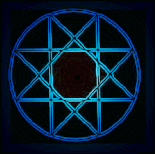

Azazel and Thoth worked with me to revise this meditation which was based on the new age "Mer Ka Ba meditation." Further revisions were dictated to me from Azazel [26-27/March/2005]. There are many new age authors who write about and teach the Mer Ka Ba. The new age version is based upon a hexagram. The hexagram version was given to new age enthusiasts by angels. What the hexagram does is it establishes a geometric energy field that corresponds to the planet Saturn, of time; the lower octave of Saturn. The current system of time, based on the number 3 and 6, is out of sync with the vibrations of the earth and the universe, which are naturally 13 and 20; the 13 lunar months. Unbeknownst to many, the hexagram meditation is a conspiracy and is to the detriment of humanity. It has to do with the numbers and numerology. Each number 1 - 9 and also 11, 22, 33, 666, etc., has its own powers and vibrations. Life is all about numbers.
|  | The meditation give on this website is based on the eight-pointed Star of Isis (Astaroth). "Ashta" in Sanskrit [one of the most ancient and also spiritual of languages] means "8." The correct position of for the Star of Isis is rotated at 22 degrees. Shown at left, in its upright position, it is known as the "Sigil of the Beast 666."¹ The Silver Star of Isis (turned at 22 degrees) is also said to have been worn by the Knights Templar on a red sash. The numbers are definitely Satanic as the number of Isis (Astaroth) is 8 and the number of the pentagram is 5; 8 + 5 = 13. Enki's number is 40; another combination is 5 x 8 = 40. 13 is also based upon the thirteen Lunar Months which is the natural year and the eight phases of the moon. It is also based upon the Satanic Year. |
 | Her Babylonian symbol is known as the "Star Disc of Ishtar." What this meditation can do is take your energy field to a much higher vibration. The geometry of energy has powerful effects.
Once this meditation has begun, you should continue to do it every day until the spinning fields are permanent. You will know they are permanent when you can feel the pulsating senstion any time you focus your attention on them. Once they are permanent, you will no longer have to perform the meditation every single day. |
The eight-pointed star is very ancient and based upon the octahedron. The octrahedron is an extremely important aspect of nature and is one of the primary archetypes of creation for all life. It is based on 13 circles of which the centers connect. It is also the basis of important informational systems in the universe. Within it are found all five of the Platonic Solids, the "building blocks" of creation. The eight pointed star is also the symbol for the "Shambhala initiation;" the initiation of advanced Buddhist monks into the Kalachakra Tradition. This tradition preceded what most people know as Buddhism by thousands of years and is based upon the Tibetan "Bon" religion, which was given to the Tibetan Priesthood from Marduk/Amon Ra. Unlike the pacifistic, self-sacrificing contemporary Buddhist religion, the original Bon religion was a warrior religion where disciples were pushed to exceed limitations and become as the Gods. ²
"Once the candidate was lead through the seven gates and received the seven initiations [opening of the seven chakras], it was possible for them to be received in the court of Shambhala." ³
References:
¹ Genesis, The First Book of Revelations by David Wood ©1985
² The Black Sun by Peter Moon ©1997
³ Cloak of the Illuminati by William Henry © 2003
© Copyright 2005, 2012, Joy of Satan Ministries;
Library of Congress Number: 12-16457